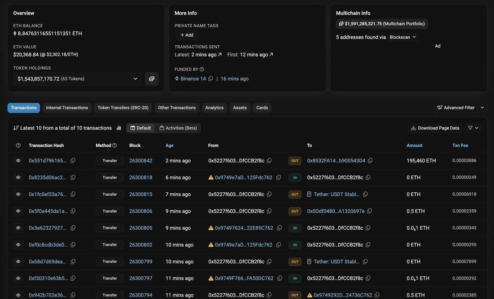
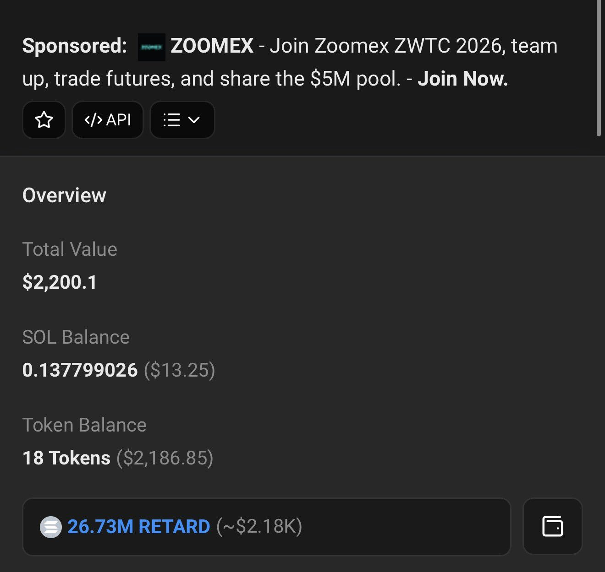
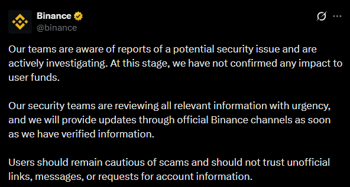
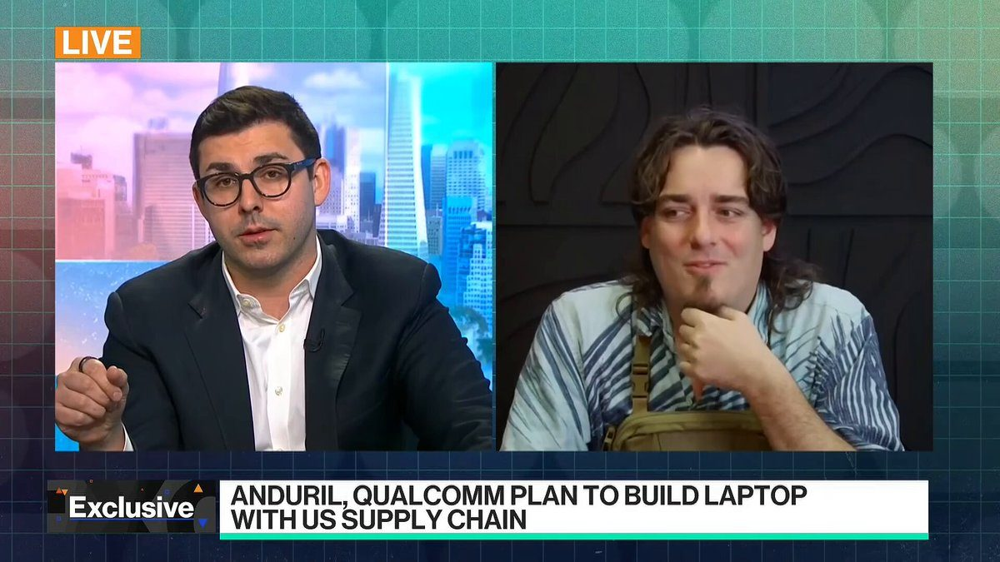
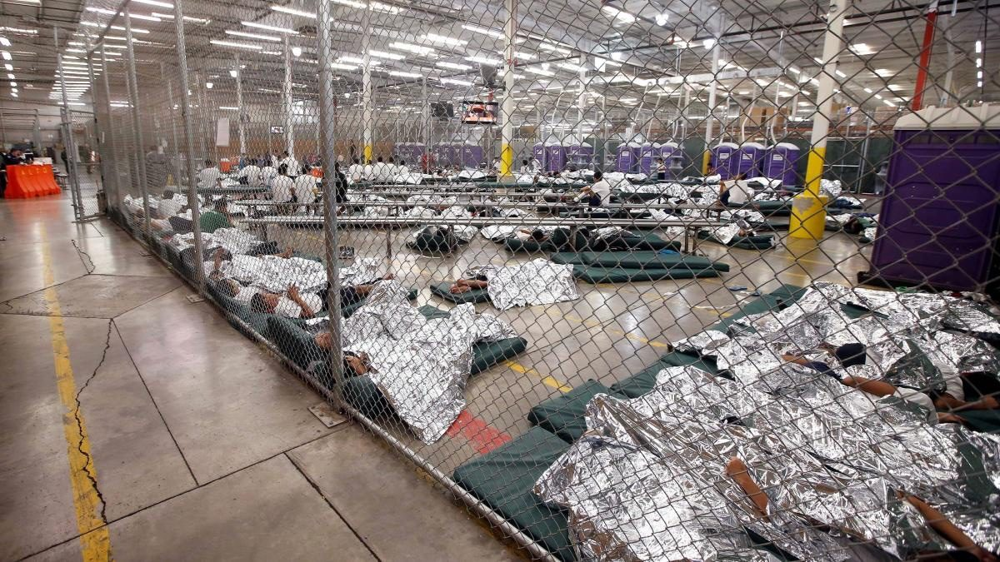
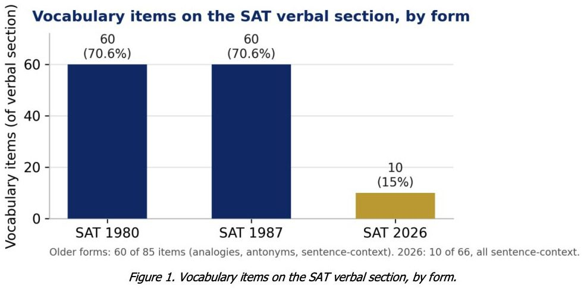
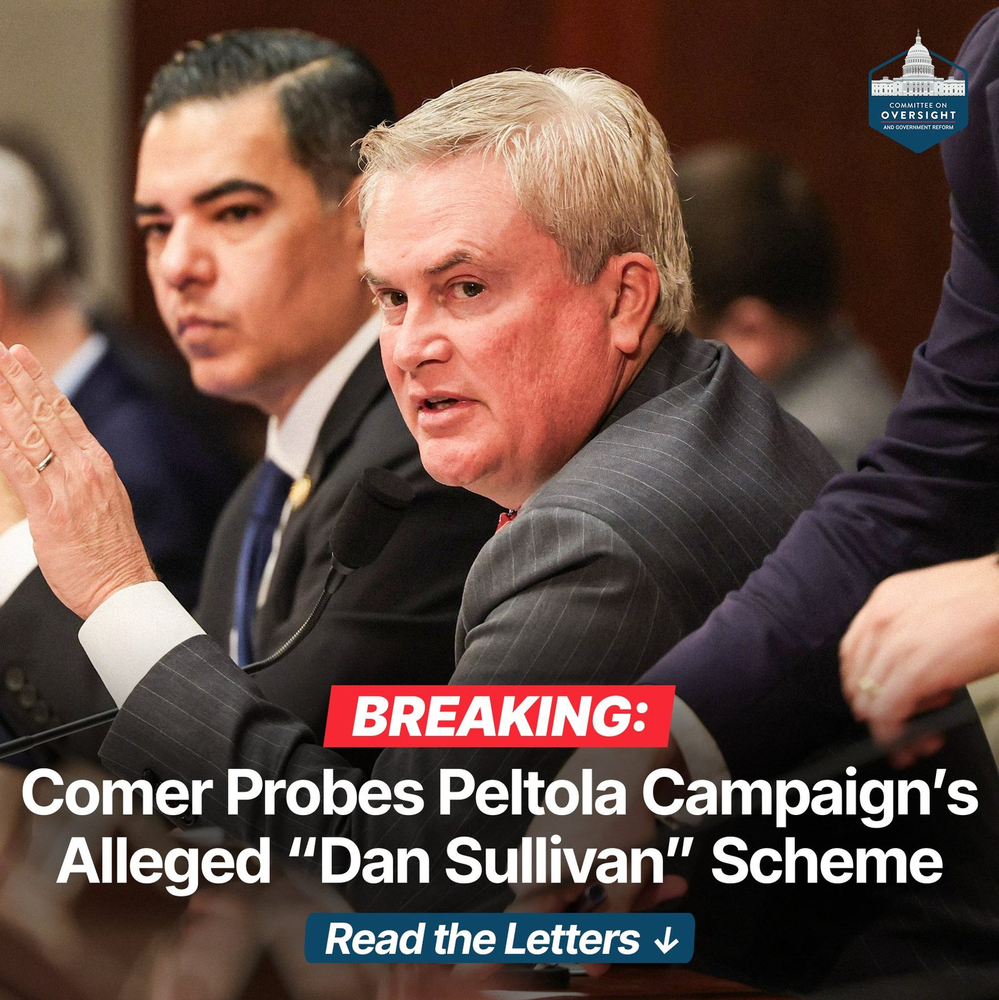
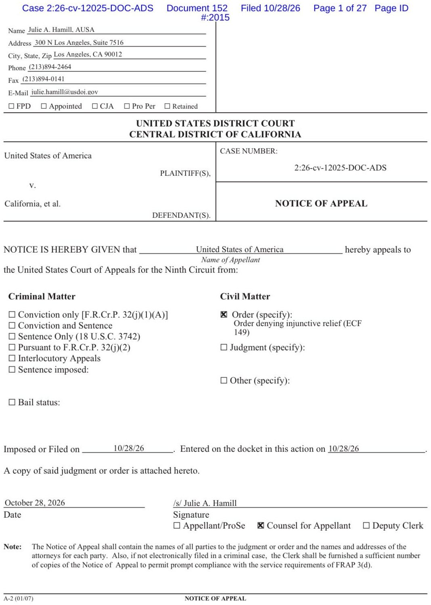

BREAKING: World's largest crypto exchange Binance hacked with over $5.6 billion stolen:
• $1.45 billion $BTC • $875 million $ETH • $234 million $TRX • $50 million $XAUT • $1.57 billion $USDT • $823 million $USDC • $75 million $WBETH • $88.5 million $RLUSD + $447.5 million additional cryptocurrencies
This is the largest hack in crypto history.
You literally can’t make this shit up
The binance hacker has only 1 coin he’s ever bought on solana, and it’s fuckin Retard Coin
What the fuck is going on


BREAKING: Binance responds to ongoing situation regarding a suspected potential $2.8 billion hack.
Full Statement Below:

Ripple is closely monitoring reports of a potential exploit involving Binance and its attackers’ RLUSD holdings and we are actively freezing affected funds. We’re coordinating with relevant parties and stand ready to support any investigation and appropriate action to keep users protected.
BREAKING: Tether has frozen $971 million worth of USDT which has been linked to a suspected Binance hack.
This comes just minutes after Binance wallets saw a $2.8 billion outflow across five blockchains.
Binance has yet to comment on the situation.
User funds are safe!
It does look like a hack on Binance. Appreciate the quick freeze from Tether (~$971m) and Circle (~$823m).
I don't manage Binance (.com) anymore, but as a shareholder, I expect all user funds will be fully covered.
JUST IN: 🇬🇧🇭🇰 London Metal Exchange to tokenize metals stored in Hong Kong into digital assets used for financing.
Palmer Luckey says analysts claiming it's too expensive to manufacture in the US are lying to protect megacorps
"I think I have a more realistic view than almost anybody. One of the problems with all these analysts that are telling you that it's going to cost $37,000 to build an American iPhone or $100,000 to buy an American computer."
"They're trying to prop up a status quo that the megacorporations want to keep going. They want to outsource everything. They want to hire cheaper non-American labor."
"They are willing to say and do anything to convince you that it can't be fixed, that it can't come back, that America is this helpless, neutered, post-relevant empire, and it is just not the case."
"How do I know that? Because I have to make stuff in America every day because I work in the defense industry. The stuff that Anduril makes every day is not actually that different from a computer. My drones are basically computers. They have memory, a GPU, a CPU, sensors, batteries, a rugged integration."
"The only difference between an Anduril attack drone and a laptop is a keyboard and a screen. That is not that hard to figure out, especially for a guy like me who started Oculus and comes from the consumer electronics space."
"We're not going to let people lie about what America can and can't do anymore. We're just going to do it."

▶ Watch on XA country that cannot build cannot lead. President Trump understands that economic security is national security. Proud to serve as we bring production home, secure our supply chains, and ensure the next industrial revolution is built by American workers. AMERICA FIRST!
Under the leadership of @POTUS @realDonaldTrump, @SecRubio and I have long emphasized that foreigners who participate in, advocate, or celebrate political violence aren’t welcome visitors in our country, and that we’re ready, willing, and able to revoke visas as we become aware of such cases. We take this issue, which prior Administrations failed to address, with the utmost gravity. Many cases that have been brought to our attention on social media, however, do not in fact involve foreigners present in our country on visas, but instead US citizens. Under those circumstances, obviously, no visa action is implicated. So just make sure to take with a grain of salt what you read online. As always, we encourage everyone to report suspected visa fraud or abuse at https://t.co/JyQnVSe91p and we’ll look into it.🫡🇺🇸
The Fifth Circuit Court of Appeals rules 10–7 that illegal immigrants who entered the US illegally have no constitutional right to bond hearings.
Follow: @AFpost

NYC's DAs go awkwardly quiet when asked about claims they told staff to downgrade charges against illegal immigrants
Jupiter Florida has a non profit organization called El Sol that rents a building where they help ILLEGAL ALIENS connect with employers and get work.
The building is rented for $1 a year from the city of Jupiter, the building was built and sustained by tax paying citizen dollars.
The police know that this is going on and so do the residents of Jupiter, why is nothing being done about this issue?
DHS confirmed 4,170 arrests of illegal immigrants across Texas in a 10-day statewide operation.
I am speechless. Thomas Aquinas College just dropped a study on the rigor of the new SAT.
It compares the 1980/87 test with 2026. The findings should terrify every parent and teacher...
Vocabulary has collapsed.
Old SAT: 70.6% of questions tested vocab. New SAT: 15%.
The old test forced students to know a wide range of words through analogies, antonyms, and sentence completions. The new test abandoned that. Most vocab questions now just ask students to fill in one blank from context.
Reading passages also got radically shorter (average ~97 words vs 300–340).
The new test uses short expository passages and hands you the necessary background knowledge inside the text. The older tests leaned much more heavily on argumentative and persuasive writing, assumed far more historical, scientific, and cultural knowledge, and penalized students who lacked it.
This is a redefinition of what "college readiness" means.
If you believe that kids should develop rigorous vocabulary, be capable of sustained reading, and possess background knowledge, I have bad news for you. The SAT no longer measures these.
If you want a future where children can actually read difficult texts and construct complex arguments, the SAT must be replaced now.
This cannot go on.

🚨 We’re investigating allegations that the Peltola campaign recruited candidates with a name nearly identical to Sen. Dan Sullivan’s to confuse Alaska voters.
Chairman @RepJamesComer: “Democrats are the party of fraud. Knowing they can’t win on the issues, Democrats schemed to rig the U.S. Senate election in Alaska by deliberately confusing voters.”
We’re seeking interviews with the Peltola campaign’s former manager and a Democrat operative. 👇🏻

The district court denied our emergency request to sequester ballots from 20,000 suspected noncitizens. Every day, more ballots are processed by election officials. This ongoing emergency disenfranchises American citizens through dilution. The Solicitor General authorized an immediate appeal. We filed our Notice of Appeal and will immediately seek an emergency order from the Ninth Circuit.

🇺🇸 BIG: The CFTC will host an industry roundtable on Dec. 15 to discuss moving US derivatives markets to 24/7 trading.
A pro-growth economic agenda aligns with American founding principles of personal economic freedom and private property. Free enterprise not only fosters innovation to raise the standard of living for whole populations—it causes the entrepreneur to care about customers as individuals. Morally, it is superior to redistribution schemes fueled by envy and resentment. Growth is the answer and just look at third quarter results to see it happening.
“It’s no longer science fiction to imagine your refrigerator autonomously purchasing your groceries with funds that it earns from launching a memecoin or staking ether.” — @ChairmanSelig at today’s CFTC AI roundtable
Could you have imagined a regulator saying this two years ago?
LATEST: CFTC chief poses questions about policing AI but calls it a road to 'autonomous trading'
JUST IN: 🇺🇸🇯🇵 United States and Japan reach deal to build new missile production facility in Japan.
JUST IN: Switzerland officially reopens diplomatic office in North Korea.
OPERATION GHOSTBUSTERS 👻🇺🇸
Kenyan nationals used stolen American identities to commit fraud by funneling federal student aid for their own personal gain and co-conspirators overseas.
Fraudsters like these are being crushed under @WHFraudTF and @TheJusticeDept leadership.
.@SecScottBessent: “Last Wednesday was the eight-week anniversary of Operation Economic Outcast, and it has been very successful. This is the toughest operation ever to isolate a single economy in the history of the world.”
HUMANITARIAN ROADWAYS CLEARED Demining operations are complete, and preparations for the humanitarian mission are in their final stage. All designated routes, established jointly by Ukraine and Russia, have been cleared for safe passage.
The convoy will soon enter Oleshky to deliver food, clean water, medicine, and other essential aid to the city’s residents.
JUST IN: 🇬🇧🇺🇦 Ukrainian President Zelensky tells UK leaders "you've made my day" after Britain pledges another $13 billion in support.
🚨All 32,000+ @HillaryClinton private server emails from the State Department FOIA reading room just landed in Doc Depot.
What State’s site can’t do, Doc Depot can: clean viewing and a full AI agent that lets you search, question, and analyze the entire set instead of digging through the government’s clunky interface.
JUST IN: 🇨🇳 China officially begins construction of world's first mobile, self-sustaining artificial island.
Obama admin started the investigation into Ilhan Omar “marrying her brother,” not Trump, per NYT.